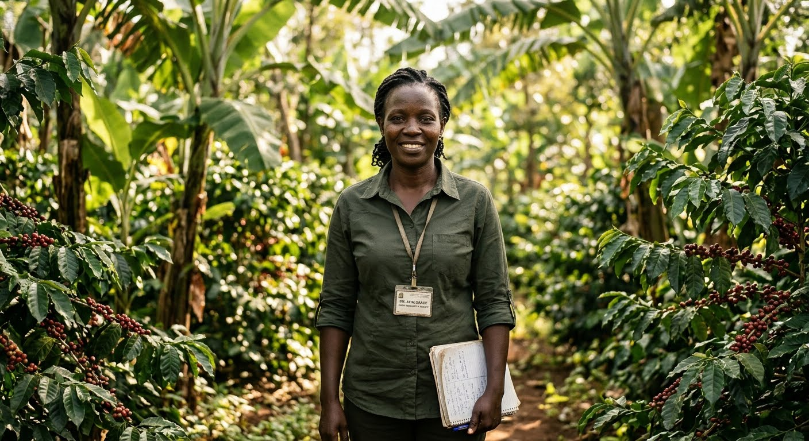
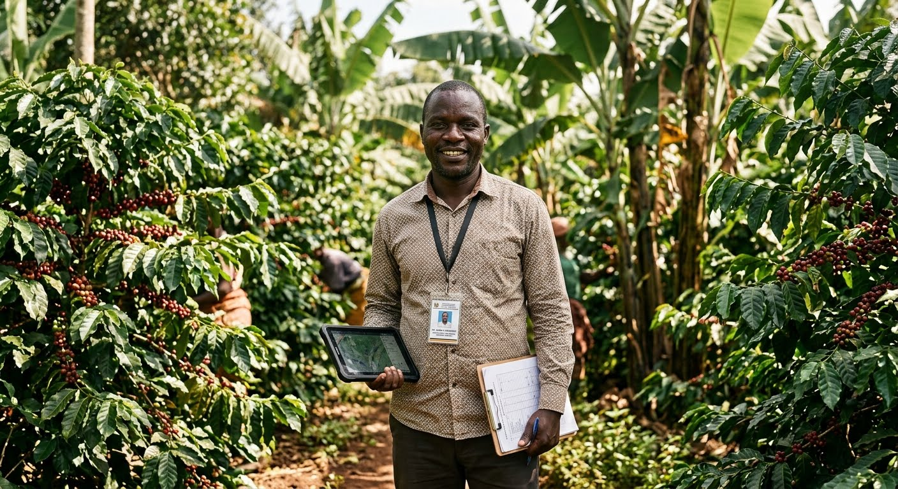
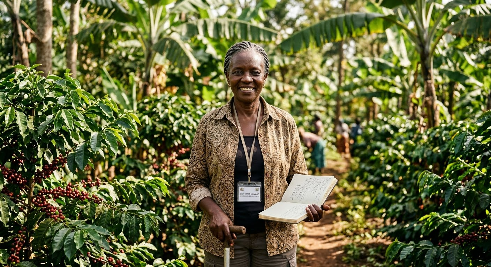
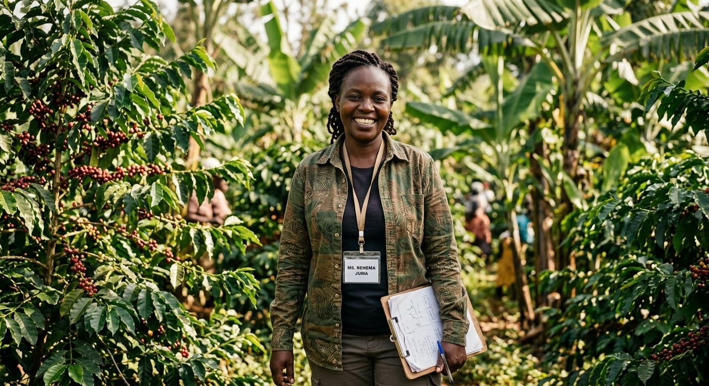

Dr. Grace Atim
Director of Research, Pearl Coffee Research Centre
Dr. Atim leads research on coffee varieties that resist disease and drought. She has worked with farmers across Uganda to turn research findings into higher yields.
Meet the experts who will share ideas and experience at the Expo.

Director of Research, Pearl Coffee Research Centre
Dr. Atim leads research on coffee varieties that resist disease and drought. She has worked with farmers across Uganda to turn research findings into higher yields.

Chief Executive Officer, Mt. Elgon Growers Cooperative
Mr. Kiggundu manages a cooperative of several thousand smallholder coffee farmers. He is known for helping members get better prices through joint marketing.

Professor of Agribusiness, Lakeview University
Prof. Mbabazi teaches and researches how small farm businesses can grow profitably. She also mentors young entrepreneurs in the agricultural sector.

Head of Sustainability, East Africa Coffee Traders Forum
Ms. Juma designs programmes that make coffee supply chains traceable and fair. She works with buyers and growers to protect livelihoods and the environment.
| Name | Organisation | Country | Session Title |
|---|---|---|---|
| Mr. Daniel Okot | Nile Roasters Ltd | Uganda | Roasting for Export Markets |
| Dr. Lucy Wanjiru | Highlands Agri-Tech | Kenya | Climate-Smart Coffee Farming |
| Mr. Jean Mugabo | Kivu Coffee Alliance | Rwanda | Specialty Coffee and Fair Pricing |
| Ms. Neema Mwakyusa | Southern Highlands Growers Board | Tanzania | Digital Tools for Smallholders |
We invite researchers, practitioners and students to submit abstracts on any part of the coffee value chain, from growing and processing to trade and policy. Abstracts should be no more than 300 words and must state the aim, method and main findings of the work.
Accepted authors will be asked to present their work in a 15-minute session and to upload a short paper. All submissions should be sent in English as a Word or PDF file, using the Expo submission email.
| Milestone | Date | Status |
|---|---|---|
| Abstract submission deadline | 30 April 2026 | Closed |
| Notification of acceptance | 31 May 2026 | Closed |
| Final paper and presentation upload | 31 July 2026 | Open |